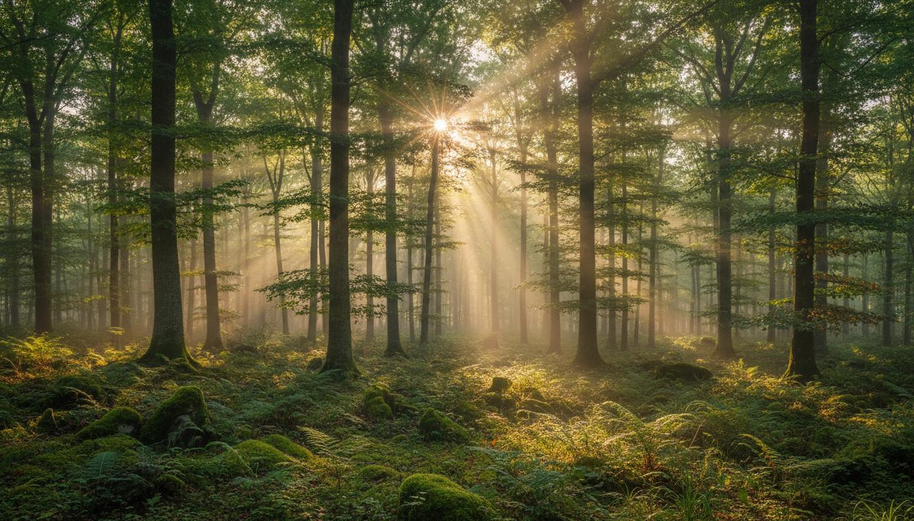
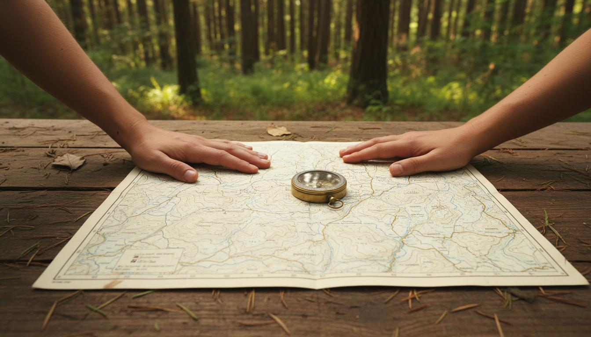
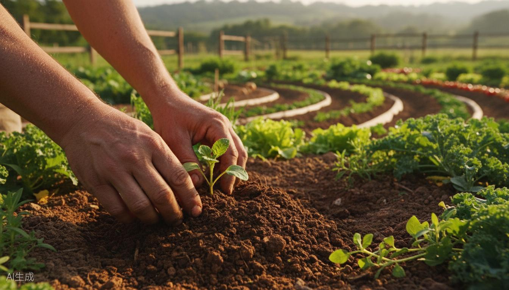
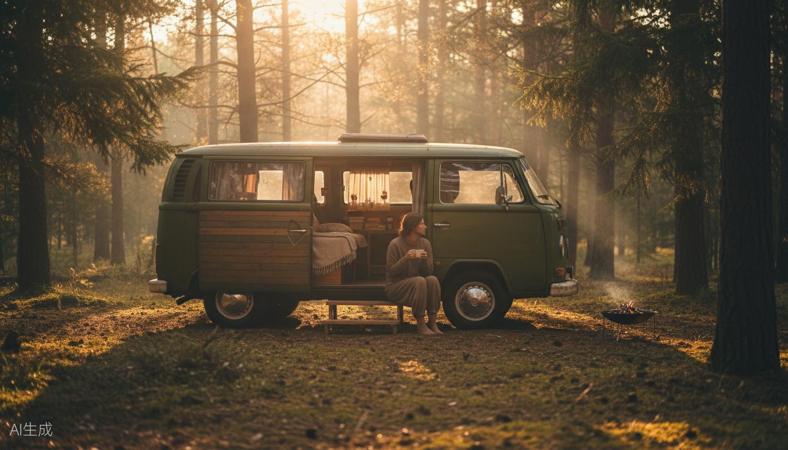
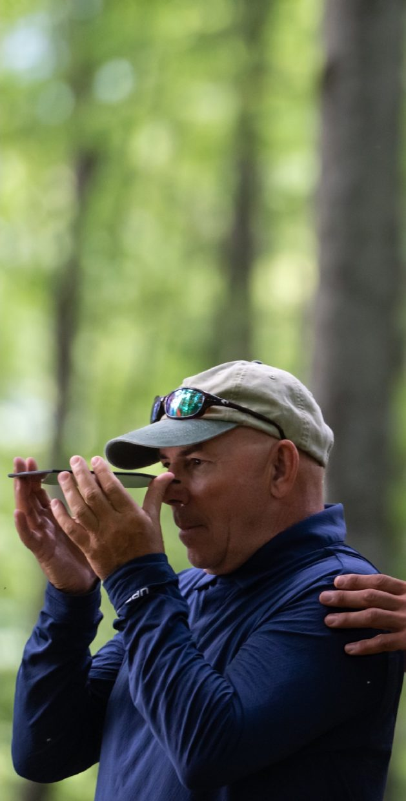
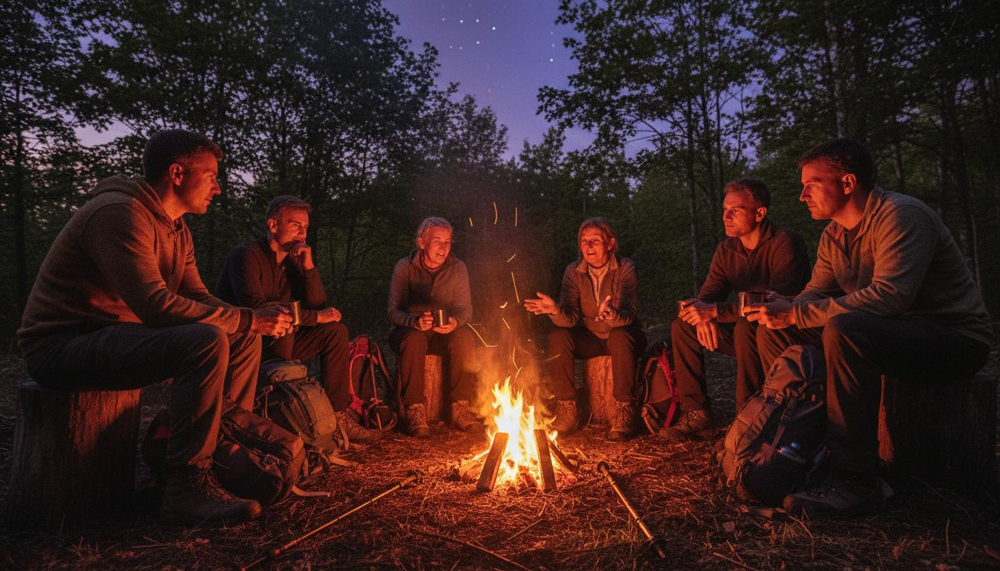

Sul campo
- Guida ambientale escursionistica 2019
- Operatore sopravvivenza outdoor FISS 2022
- Primo soccorso in ambiente remoto (RLS L1) 2022
- Istruttore Wildfulness

Dallo schermo alla terra, un passo alla volta.
Sono Matteo Mancini, guida ambientale escursionistica e formatore esperienziale outdoor. Non ti accompagno per cambiarti: ti accompagno a fare esperienza diretta di un modo diverso di stare.





Il problema non era fuori. Era come stavo dentro. Il bosco mi ha restituito la bussola: ecco il sentiero fin qui.



E condivido quello che funziona.


Da partecipante: Ricerca di visione · Coyote Mentoring · Il lavoro che riconnette.
Guida ambientale escursionistica abilitata in [REGIONE] · tesserino n. [NUMERO] · assicurazione RC professionale [COMPAGNIA] · primo soccorso aggiornato al [DATA]

Vivevo nel futuro, per obiettivi, temendo che non bastasse. Non serve fuggire in natura: serve tornare a sentire.

Ho letto centinaia di libri senza ricordarli. Ho imparato davvero solo mettendo le mani. Prima il fare, poi il guardare.

Non si tratta di arrivare da qualche parte. Ogni passo è già arrivo: non una meta, ma un modo di camminare.
Tra l’alta Toscana, il Mugello e l’Emilia, tra i boschi e gli orti.

Scrivimi. Nessuna promessa di trasformazione, nessun corso da venderti: solo una conversazione, per capire insieme.